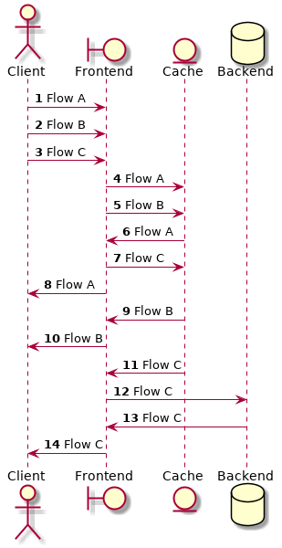

fidi (φίδι) must:
- Not contain any business logic or sensitive data.
- Be able to model complex data flows that change over time.
- Be able to model arbitrarily complex interconnections between nodes in the service.
- Be able to simulate interconnects that happen in any combination, in sequence and/or in parallel.
- Be able to massage the latency and error profile of any interconnection at will.
- Enable all interconnections and fault injections to be specified on the fly.
- Validate the input client request for correctness (independent validation, prior to run time).
- Have multiple instances able to coexist on a machine (to simulate complex apps on only a single machine, or a complex service that feels multiple boundaries with independent connections on a single instance).
User Stories
- As an experiment runner, I want to be able to model different calling patterns and interactions between components of the service at will, or at least by each request to the system.
- A corollary is that as an experimenter I want to be able to reconfigure the interconnections between components (request/data flow) at each request, simulating how a service may behave differently based on inputs/external stimuli.
- As an experiment runner, I want to simulate the behaviour of the business logic of the service in response to stimuli and error conditions.
- As an experiment runner, I want to be able to inject faults into the simulated service components. This includes, but is not limited to specifying the return code and injecting latency increases for any interaction in the request flow.
- As an experiment runner, I should be able to specify the response code, latency, response size, and memory consumed by any component for each interaction in the flow.
- As an evaluator, I want to model the business logic behaviour of a complex, multi-level service.
- As an evaluator, I should be able to specify a series of interactions between the components of the system for each request, including serial or parallel interactions between components, and the performance characteristics of each of the interactions.
- As an evaluator looking at gap analysis for the solutions deployed around the simulated service, I want to be able to script normal behaviour of the service, simulate an incident that affects one or all components of the service, and recovery, and set up any number of diverse incidents over time.
- As an evaluator, I want to be able to simulate changing behaviour of the service over time, to reflect the real service changes of behaviour. This means that I should be able to specify, at an abstract level, the performance of each component of the simulated service (for example, performance, load on the machine, size of the responses, etc.)
Exemplar Service
fidi (φίδι) should be able to mock this caching service

An example caching service

 1.8.13
1.8.13